Takko
Takko · Aomori
Takko
Highlighted on the Aomori map.
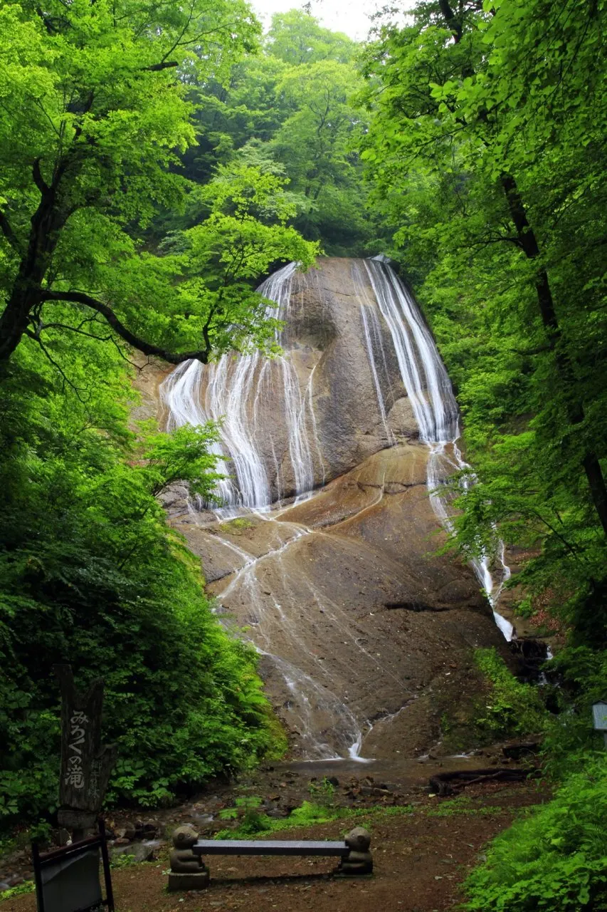
Stay
たっこ宿
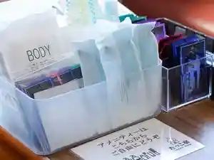
Takko Yado
ロッジカウベル
Rojjikauberu
Dining
肉の博明
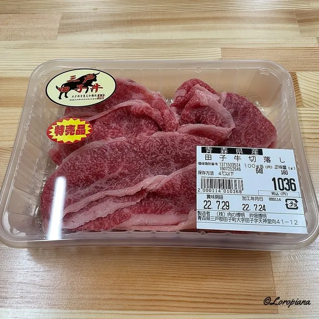
Niku No Hiroaki
みろく亭
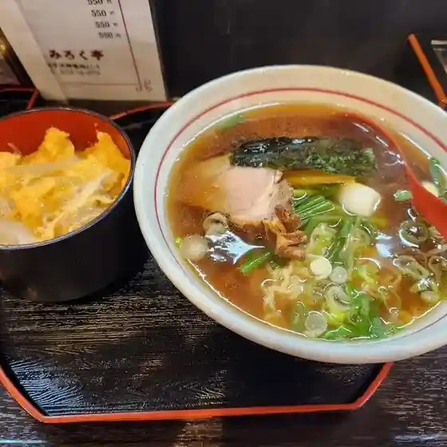
Miroku Tei
あざみ
Azami
Takko cafe
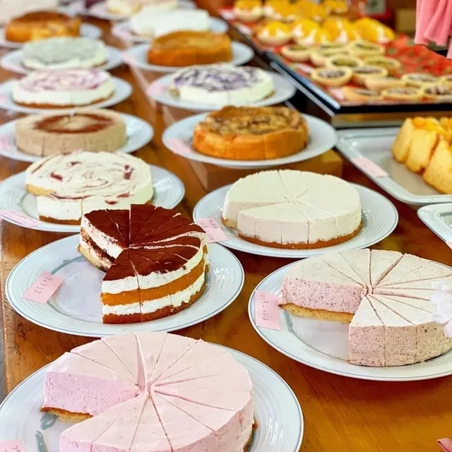
Takko Cafe
御食事処 なくい
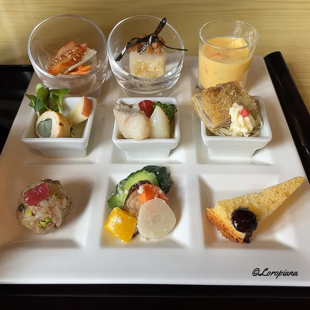
Mike Koto Tokoro Nakui
ギルロイカフェ
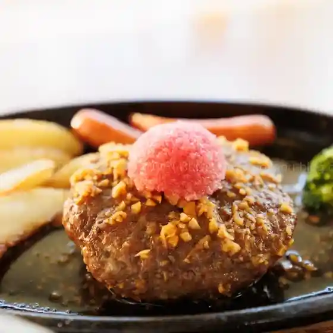
Giruroikafe
りんごとごりら
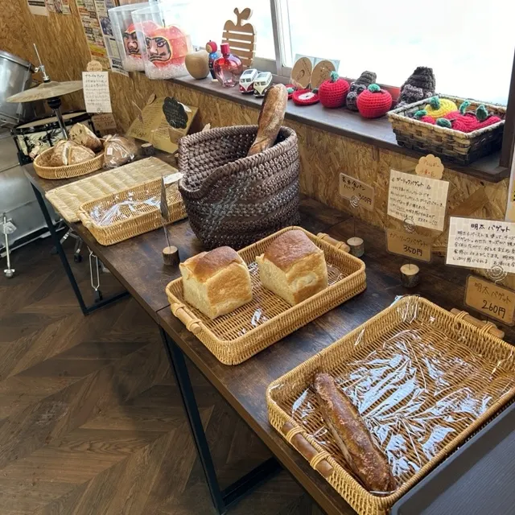
Ringotogorira
むらき菓子店
Muraki Kashi Mise
Daisy
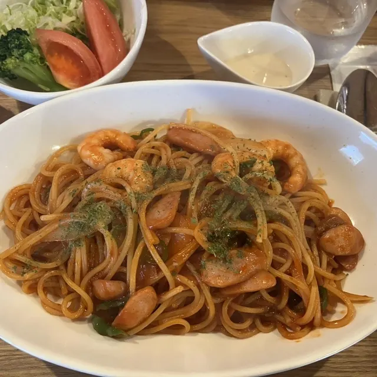
Daisy
あおい
Aoi
のら
Nora
池田ファーム
Ikeda Faamu
なくい
Nakui
パピヨン
Papiyon
勇鮨
Isami Sushi
山川旅館
Yamakawa Ryokan
田子町ガーリックセンター
Tago Machi Gaarikkusentaa
田子温泉
Tago Onsen
いろり
Irori
田子たまご村
Tago Tamago Mura
肉の博明ダイニング
Niku No Hiroaki Dainingu
Sights
Miroku Falls
About 30 m waterfall reached by a path through primeval beech forest.
Takko Garlic Center
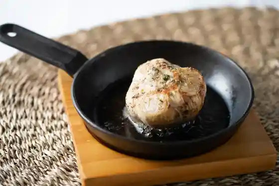
The Takko Garlic Center exhibits the town specialty of garlic, has a store specializing in garlic products, and a restaurant that serves garlic-based dishes.
Tapukopu Soyumura Village
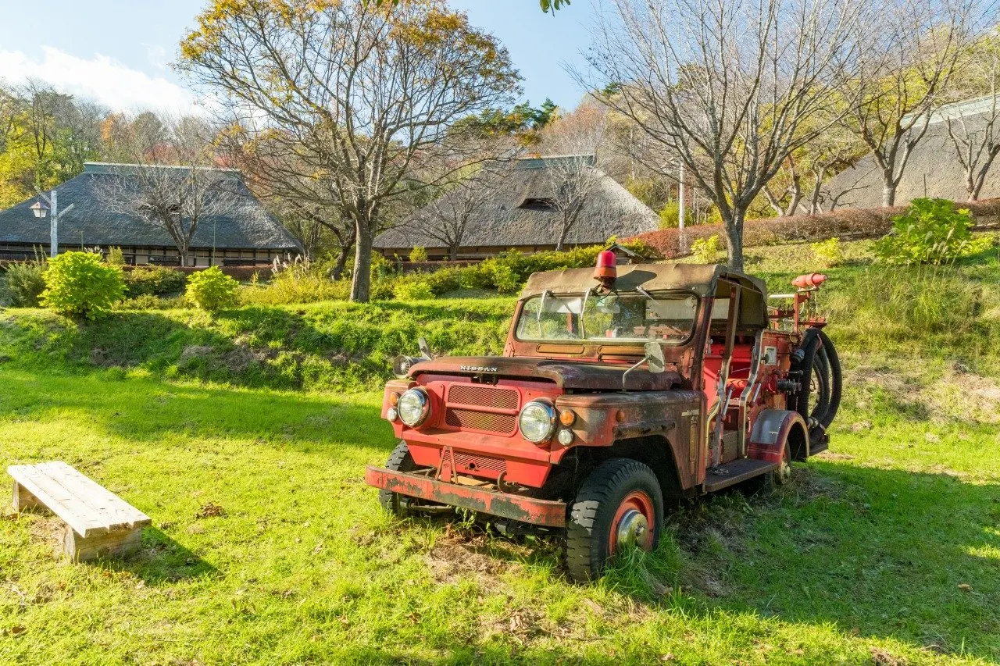
Takko Town is the southernmost town in Aomori Prefecture. Amid its lush countryside, you'll find Tapukopu Soyumura Village, where you can actually experience the town as it was 100 years ago.
Soyumura 229 Ski Land
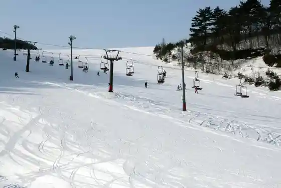
Family ski area in the garlic town of Takko, open late December to early March.
Mt. Daikokumori
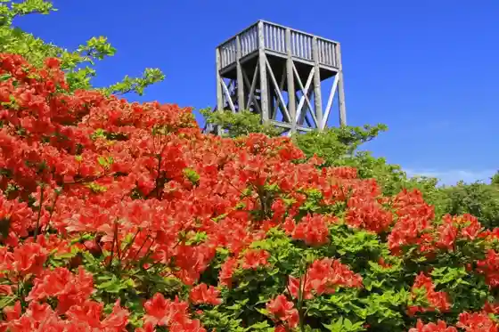
Gentle mountain with about 100,000 wild azaleas and a summit observatory.